動画のテーマ：その他
このビデオは、当財団がYouTube公式チャンネルで定期的に配信している心の健康ビデオセミナーの講演内容の一部を視聴できる動画です。動画のテーマはその他の症状に対する森田療法です。

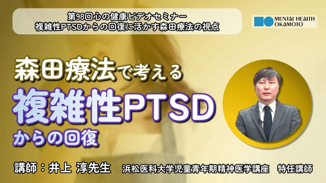
視聴動画（156） 5:11
複雑性PTSDからの回復に活かす森田療法の視点
（井上淳先生）
森田療法の視点をどのように活用出来るのかを、幾つかの事例と共に解説します。
動画を見る
視聴動画（155） 5:43
不安を抱えてなかなか踏み出せないとき、どうすればよいか
（松本裕史先生）
不安とどのように付き合うと良いか、また家族などの支援者はどう接すると良いか解説します。
動画を見る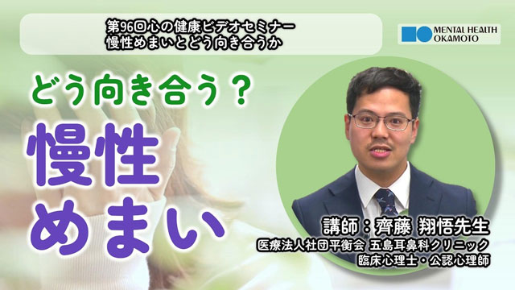
視聴動画（154） 6:13
慢性めまいとどう向き合うか～森田療法から学ぶ心と身体のケア～
（齊藤翔悟先生）
めまいの症状に着目し、持続性知覚性姿勢誘発めまい（PPPD）と森田療法の共通点を解説します。
動画を見る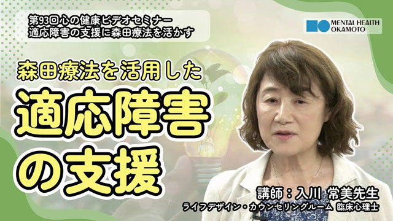
視聴動画（150） 4:36
適応障害の支援に森田療法を活かす
（入川常美先生）
適応障害（森田では適応不安）に森田療法がどう生かせるのか、事例も取り上げながら解説します。
動画を見る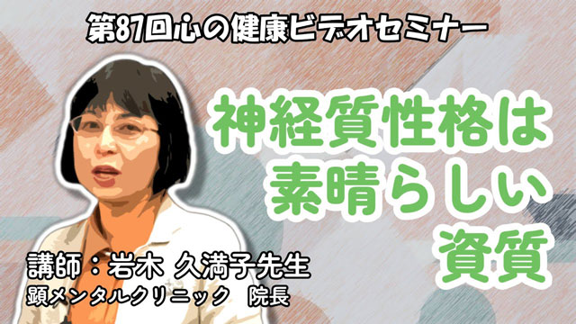
視聴動画（144） 5:23
神経質は素晴らしい資質
（岩木久満子先生）
森田療法の基本概念についての解説や神経症の成り立ち、「感情の法則」を説明し、神経質性格がどのように素晴らしい資質であるかをお伝えします。
動画を見る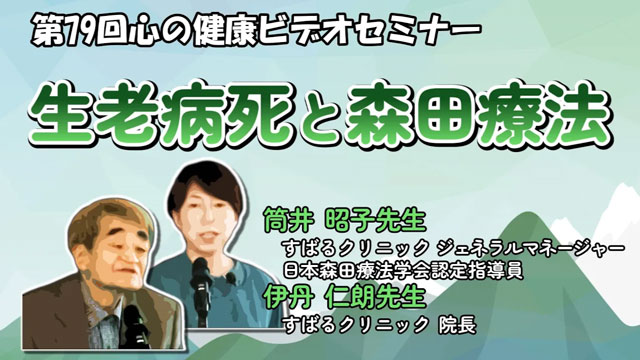
視聴動画（135） 5:39
生老病死と森田療法
（伊丹仁朗先生、筒井昭子先生）
森田正馬の生涯と共に、森田療法が生まれ発展していく姿と森田療法の考え方を応用した「生きがい療法」について解説します。
動画を見る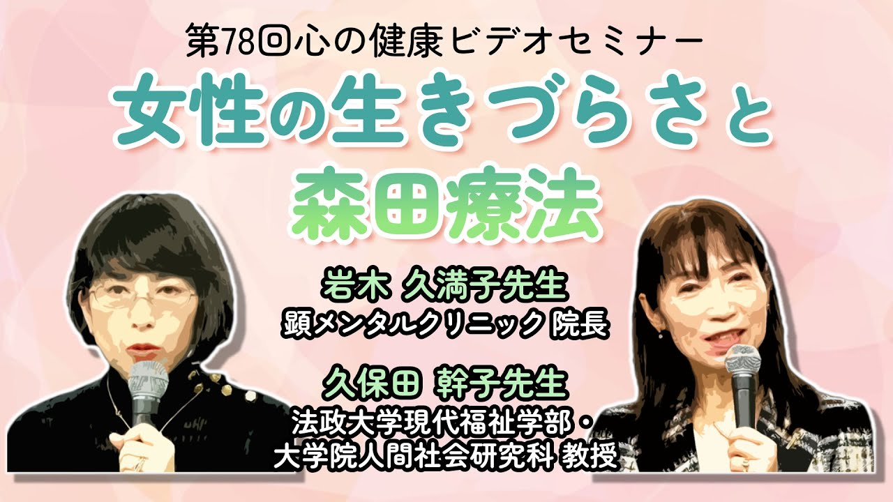
視聴動画（134） 7:16
女性の生きづらさと森田療法
（岩木久満子先生、久保田幹子先生）
青年期・成人期・中年期女性の生きづらさに着目し、人生の節目で直面する葛藤や悩みに対して森田療法が役に立つことを解説します。
動画を見る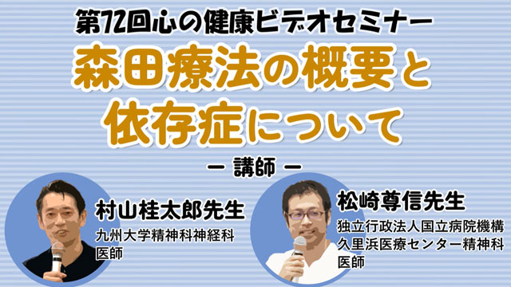
視聴動画（126） 5:44
森田療法の概要と依存症について
（村山桂太郎先生、松崎尊信先生）
森田療法については村山先生、依存症については松崎先生が解説しています。
動画を見る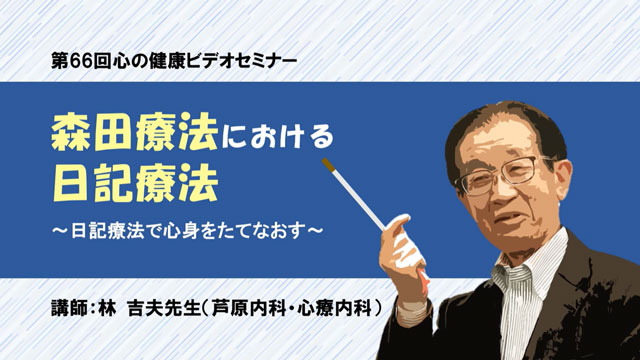
視聴動画（120） 4:42
森田療法における日記療法～日記療法で心身をたてなおす～
（林吉夫先生）
森田療法における日記療法の役割とその書き方や、自学自修の日記療法「森田式ダイアリー」について、指導の事例などを解説します。
動画を見る
視聴動画（119） 3:58
不安障害の体験と適応障害の事例～「不安を手放すこと」を手放せる森田療法～
（田邉千栄里先生）
講師自身の不安障害の回復体験や、森田療法の概要や考え方を解説します。
動画を見る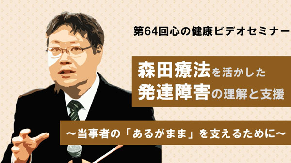
視聴動画（118） 6:32
森田療法を活かした発達障害の理解と支援～当事者の「あるがまま」を支えるために～
（松浦隆信先生）
発達障害に見られる特性の一例を挙げ、発達障害を抱える子供と大人の間で起こる関係悪化の可能性を解説します。
動画を見る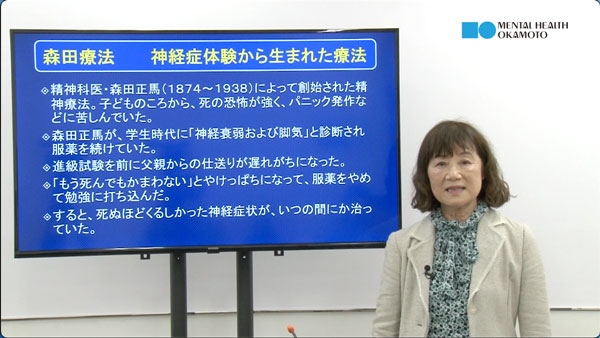
視聴動画（75） 9:50
クレプトマニア（窃盗症）からの回復：森田療法の可能性
（入川常美先生）
社会問題化するクレプトマニアとはどんなものか、森田療法的なアプローチによる克服法を解説します。
動画を見る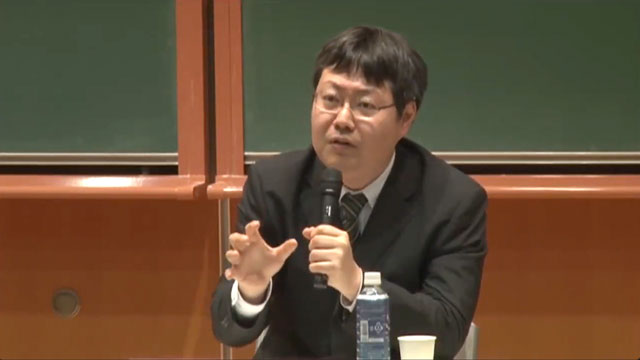
視聴動画（46） 2:33
発達障害の理解と支援ーパネルディスカッションQ&A
（松浦隆信先生）
引きこもりに対する森田療法の支援、特に隠された生の欲望を引き出す方法についてなどの質疑・応答の内容です。
動画を見る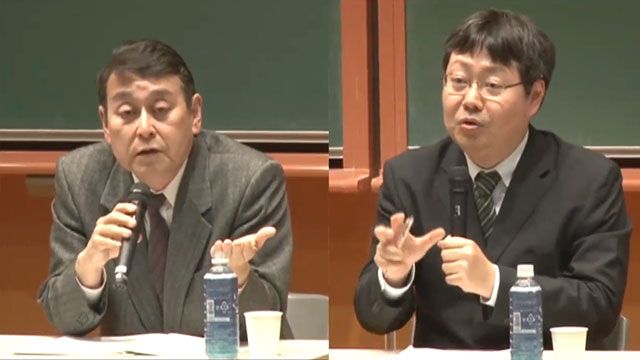
視聴動画（45） 9:43
発達障害の理解と支援ーパネルディスカッションから
（杉山登志郎先生＆松浦隆信先生）
外来森田療法における意識の転換と自閉スペクトラム障害と強迫症の違い、又巻き込み型の強迫症への対応などの質疑・応答の内容です。
動画を見る